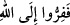
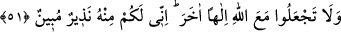

Meşâyıhtan birine Rasûlullah (s.a.)’in, “Yolculuk yapın ki sıhhat bulasınız”[26]
sözünün anlamı sorulduğunda bunun, “Bize doğru seyahat yapın ki bizi ilk önce veya her
şeyin önünde bulasınız” mânâsına geldiğini belirtmiş, sonra da bu
âyetini
okumuştur.
Hiç kimse kendisinden kopmadıkça sana bağlanamaz
Hiç kimse kendisinden kesilmedikçe sana bağlanamaz.
Keşfü’l-esrâr’da şöyle gelmiştir: Firâr sâliklerin makamlarından bir makam, dostun
menzillerinden bir menzildir. Bir kimse bu makama ulaştığında bunun alâmeti bu
kimsenin kendisini tamamıyla küçük, sözlerini değersiz, yaptıklarını da cinâyet olarak
görmesidir. Bu kimse amellerinden ümidini keser, samimiyetine töhmet eder. Yoluna bir
nimet ve devlet çıksa bunu kendi amelinden değil hükm-i ezelden ve Hakk’ın fazlından
sayar. Bütün dirilere ölülerden mirâs kalırken bu topluluk söz konusu olduğunda ölüler
diriden miras alır.
Bir hadis-i şerifte: “Kim yürüyen bir ölü görmek isterse Ebû Bekir (r.a.)’e baksın”
buyurulmuştur.
“Çünkü ben, size O’nun katından (gelmiş) açık bir uyarıcıyım.” Yâni ben size,
O’nun tarafından üstün mucizelerle gönderilmiş apaçık bir elçi veya inzâr olunduğunuz
azabı gösteren bir mübelliğim. Allah Teâlâ’nın Rasûlullah (s.a.)’e, müminlerin O’nun
ikâbından yine yalnız O’na kaçmalarını söylemesini emretmesinde, Rasûlullah’ın da
onlara Allah tarafından gönderilmiş bir elçi olup kendiliğinden bu işi yapmadığı
şeklinde bu kaçışın sebebi olarak gösterilmesinin altında, mü’minlerin kaçılan şeyden
kurtulup matlublarını elde edeceklerine dâir güzel bir müjde yatmaktadır.
51. Allah ile beraber başka bir tanrı edinmeyin. Zira ben size O’nun tarafından
(gelmiş) açık bir uyarıcıyım.
“Allah ile beraber başka bir tanrı edinmeyin.” Allah’a firar emrinden sonra getirilen
bu kısım, Allah’ın cezâlandırmasından kaçmayı gerektiren bir nehiydir. Sanki burada
şöyle denilmek istenmiştir: “İtikadî olarak Allah Teâlâ’nın yanına başka ilahları
koymaktan veya «O’ndan başka ilâh vardır» demekten kaçının.”
“Zira ben size O’nun tarafından (gelmiş) açık bir uyarıcıyım.” Yâni ben size,
kendisinden nehyolunduğunuz şeyin açıklanması için görevlendirilmiş apaçık bir
uyarıcyım. Burada, daha önce zikredilen, “azaptan kaçmak için Allah Teâlâ’ya
yönelme”nin bir tekidi yapılmıştır. Ama bu tekit tekrar yoluyla değil de o firar sebebinin
yasaklanıp, bundan kaçmanın gerekliliğinin belirtilmesi yoluyla gerçekleşmiştir.